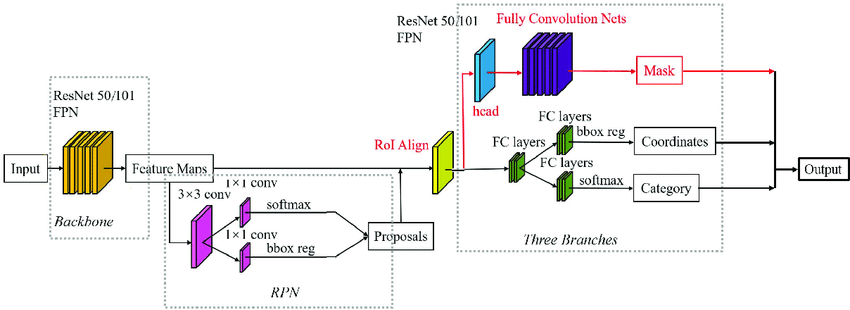

基于mmdet的maskrcnn在TensorRT上的端到端部署与精度对齐¶
零. 前言¶
一直想对去年做的FasterRCNN+ROIAlign+FPN在TensorRT上的部署做个升级，之前的版本包含如下缺点：
1. 训练代码需要自己编写
2. 仅支持batch size = 1的推理
3. 模型将onnx切成两部分来实现（RPN+ROIHead两部分），中间采用了部分cuda实现ROIAlign和ROIHead的NMS，没有做到端到端的部署
4. 用于nms采用TensorRTPro中的nms，TensorRT推理结果没有与Pytorch对齐
5. 没有FP16支持
针对如上缺点，笔者决定基于mmdet来给读者展示如何一步步将上面的缺点给解决掉。首先，采用mmdet后训练代码就完全交给了该框架。其次mmcv中包含丰富的TensorRT插件，这样可以解决精度对齐的问题和端到端部署的问题。再者，动态batch的支持问题也已经通过mmdet中的部署经验得到解决。最后，FP16的支持笔者耗费了一些时间来定位误差层，成功解决了FP16输出中含有nan的问题。
本文所有源码都在： https://github.com/thb1314/maskrcnn-tensorrt
同时，本文对应的视频教程也放进了B站，点此链接进行观看
一. mmdet中的MaskRCNN模型结构¶
为什么会有这一章呢？显然是想强调下mmdet中的MaskRCNN模型结构与论文中MaskRCNN描述的不一样。
MaskRCNN常规结构图如下图所示： 
{kind=link}
其组成部分为 FasterRCNN + FPN + ROIAlign + FCN。先说一下上图中不严谨的点，RPN部分输出不应该是softmax（当前softmax也可以做二分类），sigmoid更为适合，RPN的作用就是判断当前预测是否是物体。RPN产生的proposals送入RoIAlign后输出固定大小的feature map，输入给后续的RoIHead。
接下来就是重点了，常规的MaskRCNN中的RoIHead中分割map的预测和框的预测是并行进行的，也就是说这两个是两个并行的分支(这两个分支分别为FCN+BoxHead)。 但是，在mmdet的实现中，对框的预测过程和对分割map的预测过程是串联关系，也就是RoIAlign提取的RPN生成的粗糙框的信息对应的feature map生成修正的更为精准的框预测和细粒度的分类预测，然后再将该修正的框预测和FPN输出的特征送入RoIAlign（注意这是第二个哦，前面的用于生成框了）生成feature map，最后利用上述的feature map送入FCN分割mask预测。
这在mmdet中StandardRoIHead代码中也有体现（读者可以搜索class StandardRoIHead来观察），下面给出关键代码：
def onnx_export(self, x, proposals, img_metas, rescale=False):
"""Test without augmentation."""
assert self.with_bbox, 'Bbox head must be implemented.'
det_bboxes, det_labels = self.bbox_onnx_export(
x, img_metas, proposals, self.test_cfg, rescale=rescale)
if not self.with_mask:
return det_bboxes, det_labels
else:
segm_results = self.mask_onnx_export(
x, img_metas, det_bboxes, det_labels, rescale=rescale)
return det_bboxes, det_labels, segm_results
如上面函数所示，x表示FPN输出的特征，onnx_export函数中的流程就是先检测出det_bboxes和det_labels，然后再检测出segm_results。在mask_onnx_export中会调用_mask_forward, 可以看到如下操作，此处及证明了上面说的串联关系，mask_roi_extractor就是RoIAlign。
def _mask_forward(self, x, rois=None, pos_inds=None, bbox_feats=None):
"""Mask head forward function used in both training and testing."""
assert ((rois is not None) ^
(pos_inds is not None and bbox_feats is not None))
if rois is not None:
mask_feats = self.mask_roi_extractor(
x[:self.mask_roi_extractor.num_inputs], rois)
if self.with_shared_head:
mask_feats = self.shared_head(mask_feats)
else:
assert bbox_feats is not None
mask_feats = bbox_feats[pos_inds]
mask_pred = self.mask_head(mask_feats)
mask_results = dict(mask_pred=mask_pred, mask_feats=mask_feats)
return mask_results
二. 环境安装¶
本文实验的硬件和操作系统环境如下：
- NVIDIA GPU 2080Ti
- Ubuntu 22.04.1 LTS
- NVIDIA GPU Driver Version: 515.65.01
2.1 TensorRT安装¶
笔者采用的TensorRT版本为8.4.1.5，cuda版本为10.2，cudnn版本为8.5.0。cuda和cudnn的安装还请自行百度，不在本次教程的内容范围以内。原则上，读者的TensorRT版本只需要跟我保持一致即可，cuda和cudnn的版本的可以放宽限制。
TensorRT的C++版本安装后，还请读者安装python的包，whl就在xxx/TensorRT-8.4.1.5/python下面。
此外，还需要安装pycuda，读者新建好conda或者virtualenv的虚拟环境后采用pip install pycuda==2022.1安装即可（cuda10.2亲测可用）
2.2 编译工具的降级¶
由于cuda10.2对gcc/g++版本要求为5.0-8.0版本，所以还请读者自行安装本版本的工具，如果觉得自己的linux系统库不是很方便可以采用docker的方式解决。
如果读者cuda的版本不是10.2，请自行解决gcc/g++版本限制问题，后面能保证maskrcnn所需要的TensorRT相关插件即可。
2.3 mmdet的安装¶
新建虚拟环境
安装pytorch，按照自己实际情况来安装，不推荐使用conda安装cudatookit，因为会存在自身cuda cudnn库与conda中的库版本冲突的问题，只用torch问题不大，但是如果是使用TensorRT可能会出问题。
# CUDA 10.2
pip install torch==1.12.1+cu102 torchvision==0.13.1+cu102 torchaudio==0.12.1 --extra-index-url https://download.pytorch.org/whl/cu102
安装onnxruntime的lib库
# 切换到代码目录
wget https://github.com/microsoft/onnxruntime/releases/download/v1.12.1/onnxruntime-linux-x64-1.12.1.tgz
tar -zxvf onnxruntime-linux-x64-1.12.1.tgz
cd onnxruntime-linux-x64-1.12.1
export ONNXRUNTIME_DIR=$(pwd)
export LD_LIBRARY_PATH=$ONNXRUNTIME_DIR/lib:$LD_LIBRARY_PATH
mmcv和mmdetection安装
pip install mmengine==0.5.0
pip install openmim==0.3.5
pip install chardet==5.1.0
# 安装mmcv
git clone -b v1.7.1 --single-branch https://github.com/open-mmlab/mmcv.git mmcv
cd mmcv
# 编译安装mmcv相关onnxruntime算子
MMCV_WITH_OPS=1 MMCV_WITH_ORT=1 python setup.py develop
cd ..
git clone -b 'v2.27.0' --single-branch https://github.com/open-mmlab/mmdetection.git mmdetection
cd mmdetection
pip install -v -e .
# 安装 protobuf
pip install protobuf==3.20.0
修改mmdet适配maskrcnn的onnx的导出，建议这一步先不要执行，如果是为了立即使用看效果的读者可以这么做。后面本文会一步步的展示原版的mmdet中的MaskRCNN有什么问题，并告知作者是怎么一步步解决它的。
Note：
每次开机或者打开重新打开命令行时，在shell环境中都需要重新将onnxruntime lib目录加入到LB_LIBRARY_PATH中。读者也可以在~/.bashrc对LB_LIBRARY_PATH做永久更改，原理都是一样的。 这里给出添加命令：
cd onnxruntime-linux-x64-1.12.1
export ONNXRUNTIME_DIR=$(pwd)
export LD_LIBRARY_PATH=$ONNXRUNTIME_DIR/lib:$LD_LIBRARY_PATH
三. 下载预训练模型并采用Pytorch API推理¶
3.1 采用min下载配置文件和预训练模型¶
我们都知道，mmdet中模型的结构和训练和推理方式的定义采用xxx.py来配置，采用如下指令下载预训练模型和对应的config配置文件
cd scripts
mkdir -p models/mask-rcnn
mim download mmdet --config mask_rcnn_r50_fpn_2x_coco --dest models/mask-rcnn
cd models/mask-rcnn
mkdir config
mv mask_rcnn_r50_fpn_2x_coco.py ./config
mkdir pretrained_model
mv *.pth pretrained_model
cd ../../../
3.2 采用Pytorch API进行推理并进行可视化¶
mmdet中的模型都有可视化推理结果的功能，model.show_result简单一句api可将推理结果进行可视化。
首先调用init_detector构建模型，并将预训练模型加载，然后调用inference_detector将图片送入模型进行推理，最后调用model.show_result进行可视化。
代码如下（对应路径scripts/codes/001infer_maskrcnn_mmdet_api.py）：
from mmdet.apis import init_detector, inference_detector
import os
import glob
import mmdet
dirpath = os.path.dirname
path_join = os.path.join
BASE_DIR = path_join(dirpath(dirpath(os.path.realpath(__file__))), 'models', 'mask-rcnn')
MMDET_DIR = dirpath(dirpath(mmdet.__file__))
print('BASE_DIR', BASE_DIR)
print('MMDET_DIR', MMDET_DIR)
config_file = path_join(BASE_DIR, 'config', 'mask_rcnn_r50_fpn_2x_coco.py')
checkpoint_file = path_join(BASE_DIR, 'pretrained_model', 'mask_rcnn_r50_fpn_2x_coco_*.pth')
checkpoint_file = glob.glob(checkpoint_file)[0]
model = init_detector(config_file, checkpoint_file, device='cpu')
jpg_image_path = path_join(MMDET_DIR, 'demo', 'demo.jpg')
det_result = inference_detector(model, jpg_image_path)
basename_woext, ext = os.path.splitext(os.path.basename(jpg_image_path))
result_pred_path = path_join('../results', basename_woext + '_result' + ext)
os.makedirs(dirpath(result_pred_path), exist_ok=True)
model.show_result(jpg_image_path, det_result, out_file=result_pred_path)
四. 导出maskrcnn的onnx并采用onnxruntime执行onnx¶
4.1 初步导出onnx¶
作者参照mmdetection/tools/deployment/pytorch2onnx.py文件，修改其中的pytorch2onnx函数，直接采用代码方式构建导出功能，关键代码如下（完整代码路径在scripts/codes/002export_onnx.py）：
import os
import glob
import mmdet
dirpath = os.path.dirname
path_join = os.path.join
BASE_DIR = path_join(dirpath(dirpath(os.path.realpath(__file__))), 'models', 'mask-rcnn')
MMDET_DIR = dirpath(dirpath(mmdet.__file__))
print('BASE_DIR', BASE_DIR)
print('MMDET_DIR', MMDET_DIR)
config_file = path_join(BASE_DIR, 'config', 'mask_rcnn_r50_fpn_2x_coco.py')
checkpoint_file = path_join(BASE_DIR, 'pretrained_model', 'mask_rcnn_r50_fpn_2x_coco_*.pth')
checkpoint_file = glob.glob(checkpoint_file)[0]
opset_version = 11
try:
from mmcv.onnx.symbolic import register_extra_symbolics
except ModuleNotFoundError:
raise NotImplementedError('please update mmcv to version>=v1.0.4')
register_extra_symbolics(opset_version)
cfg = Config.fromfile(config_file)
img_scale = [800, 1216]
input_shape = (1, 3, img_scale[0], img_scale[1])
# build the model and load checkpoint
model = build_model_from_cfg(config_file, checkpoint_file)
jpg_image_path = path_join(MMDET_DIR, 'demo', 'demo.jpg')
normalize_cfg = parse_normalize_cfg(cfg.test_pipeline)
basename_woext, ext = os.path.splitext(os.path.basename(config_file))
# convert model to onnx file
pytorch2onnx(
model,
jpg_image_path,
input_shape,
normalize_cfg,
opset_version=opset_version,
show=True,
output_file=basename_woext+'.onnx',
verify=True,
test_img=None,
do_simplify=True,
dynamic_export=False,
skip_postprocess=False,
force_write=True)
执行scripts/codes/002export_onnx.py后，首先会遇到
RuntimeError: Only tuples, lists and Variables are supported as JIT inputs/outputs. Dictionaries and strings are also accepted, but their usage is not recommended. Here, received an input of unsupported type: numpy.ndarray
原因：
代码中one_meta字典中的scale_factor是一个np.ndarray，这个在torch.jit时被追踪到，我们只需要对preprocess_example_input函数最后的返回值加以改造即可。
对mmdetection/mmdet/core/export/pytorch2onnx.py文件Line 148修改如下:
one_meta = {
'img_shape': (H, W, C),
'ori_shape': (H, W, C),
'pad_shape': (H, W, C),
'filename': '<demo>.png',
'scale_factor': np.ones(4, dtype=np.float32).tolist(),
'flip': False,
'show_img': torch.as_tensor(show_img),
'flip_direction': None
}
对上面进行更改后，mmdet/models/roi_heads/test_mixins.py中simple_test_mask会报错，这里需要适配一下。
# 读者可以自行查看做了哪些更改
diff patch/mmdet/models/roi_heads/test_mixins.py mmdetection/mmdet/models/roi_heads/test_mixins.py
# 可以看到仅仅是将`torch.from_numpy`改成了`torch.as_tensor`
cp patch/mmdet/models/roi_heads/test_mixins.py mmdetection/mmdet/models/roi_heads/test_mixins.py -rf
然后会碰到mmcv中的imread函数，在203行下面添加如下逻辑：
torch的导入加入到mmcv/mmcv/image/io.py文件前面
最终我们终于导出了maskrcnn的onnx，并且采用onnxruntime与pytorch分别进行推理，最后尴尬的发现这两者结果并没有对齐，这是为何呢？下一小节给读者说明我们是如果定位这个bug的。
4.2 解决onnx与pytorch输出结果不一致的问题¶
已知torch和onnxruntime这两种框架相同模型针对相同输入最终输出不一致，我们需要的是制作定位精度不一致的工具。简单分析就是中间结果的不一致导致了最终结果的不一致，因此我们需要一个可以得到中间结果的工具。
针对Pytorch模型，我们可以在其各个nn.Module组件中的forward函数里面插入如下语句将中间结果保存（当然也可以写hook，不过没必要）：
即调用torch.save来调用实现对中间结果的序列化以及离线存储。
针对ONNX存储格式，首先需要将需要捕获的结点的名字找到，这些名字存在于onnx.model.graph.node的input和output列表当中，你可以用onnx遍历onnx模型，然后得到某类算子的输出，并将其加入到onnx.model.output中。具体代码如下（参考patch/mmdet/core/export/model_wrappers.py）：
onnx_model = onnx.load(onnx_file)
ori_output = copy.deepcopy(onnx_model.graph.output)
# 输出模型每层的输出
for node in onnx_model.graph.node:
# 加限制条件 获取满足如下条件的node的输出
if not (node.op_type in ['NonMaxSuppression', 'Concat', 'TopK', 'Sigmoid', 'Mul'] or \
node.name in ['Reshape_1686', 'onnx::Mul_2265'] or node.output[0] in ['onnx::Mul_2265', \
'onnx::Reshape_2348', 'onnx::Gather_2347', 'onnx::Gather_2337']):
continue
for output in node.output:
if output not in ori_output:
onnx_model.graph.output.extend([onnx.ValueInfoProto(name=output)])
sess = ort.InferenceSession(onnx_model.SerializeToString(), session_options)
然后在推理过程中拿到最终输出的dict，通过观察输出onnx与torch节点之间的等价关系，通过二分法定位出哪个输出不一样。当然这个过程很辛苦。
还有一个小技巧，除了自己推断torch中forward运算和onnx算子之间关系之外，还可以采用在导出onnx时，将verbose参数设置为True的方式来记录onnx算子的生成过程，这样onnx算子中description属性中就记录了整个过程。如下图所示：
{kind=link}
作者正是通过如上途径，一步步定位到是RPN模型的NMS输出不一致，为什么不一致呢？
这是因为由于FPN的存在，RPN推理在NMS阶段是需要对FPN中每个stage的输出单独执行NMS后处理的，这种方式就类似于把每个stage的输出看做不同类别，采用类间NMS做后处理。
但是，在导出onnx的过程中，mmdet简化了该步骤，即把所有的框都当做同一个stage输出的来看到，从而导致onnxruntime与torch的不一致。追溯源码过程如下：
- 首先从config文件中找到RPN中Head部分，Head部分才包含NMS，此时我们找到
RPNHead类 - 使用
class RPNHead关键词找到（笔者使用的是VSCode的全文搜索功能）mmdetection/mmdet/models/dense_heads/rpn_head.py文件（也可以通过在netron中查看导出的onnx模型中的NonMaxSuppression算子然后找到位置mmdetection/mmdet/models/dense_heads/rpn_head.py(264)）。 - 定位到导出的函数为
add_dummy_nms_for_onnx - 此时你会看到mmdet官方给的注释，这就是根因所在
# Different from the normal forward doing NMS level by level,
# we do NMS across all levels when exporting ONNX.
那么如何解决呢？
如果读者阅读过torchvision中batched_nms的实现，你一定就会知道针对类间和不同batch的nms是怎么转换为类内的nms的。
参考代码链接：https://github.com/pytorch/vision/blob/505cd6957711af790211896d32b40291bea1bc21/torchvision/ops/boxes.py#L39
这里引用代码中关键的一段注释来说明思路：
# strategy: in order to perform NMS independently per class.
# we add an offset to all the boxes. The offset is dependent
# only on the class idx, and is large enough so that boxes
# from different classes do not overlap
同时mmcv中也给出相应batch_nms的实现，位置在mmcv/mmcv/ops/nms.py Line 264。
我们根据如上思路通过修改RPNHead中的onnx_export函数以及mmdet中的add_dummy_nms_for_onnx函数，为其增加支持类间nms的功能。
首先，针对每个level的box，我们需要给他们一个标记，表示他们属于哪个stage输出的。代码如下
ids_list = []
nms_pre_tensor = torch.tensor(cfg.get('nms_pre', -1), device=cls_scores[0].device, dtype=torch.long)
for i in range(num_levels):
c, h, w = list(map(int, cls_scores[i].shape[1:4]))
cur_lvl_length = torch.as_tensor(c * h * w, dtype=torch.long, device=cls_scores[0].device)
topk = get_k_for_topk(nms_pre_tensor, cur_lvl_length)
if topk > 0 and topk != int(cur_lvl_length):
cur_lvl_length = topk
# 最关键一步，给每个层级打上标签
ids_list.append(torch.full((1, cur_lvl_length, 1), fill_value = i, dtype=torch.long, device=cls_scores[0].device))
# [1, num_boxes, 1]
idxs = torch.cat(ids_list, dim=1)
接着，我们将idxs传入add_dummy_nms_for_onnx，修改add_dummy_nms_for_onnx去适配该类信息。
首先我们需要对之前的方式做兼容，当idxs存在时再做处理
boxes_for_nms = boxes
if idxs is not None:
# [b,1,1]
max_coordinate, _ = boxes.max(dim=1, keepdim=True)
max_coordinate, _ = max_coordinate.max(dim=2, keepdim=True)
# [b,N,1]
offsets = idxs.to(boxes) * (max_coordinate + torch.tensor(1).to(boxes))
boxes_for_nms = boxes + offsets.view(1, num_box, 1)
以上就是关键适配代码，逻辑完全借鉴batched_nms的实现，至于不同batch之间的nms逻辑，这里onnx的NonMaxSuppression本身就支持，所以就不需要再考虑。
采用如下方式替换代码，解决精度对齐问题
# 读者可以自行查看做了哪些更改
diff patch/mmdet/models/dense_heads/rpn_head.py mmdetection/mmdet/models/dense_heads/rpn_head.py
cp patch/mmdet/models/dense_heads/rpn_head.py mmdetection/mmdet/models/dense_heads/rpn_head.py -rf
# 读者可以自行查看做了哪些更改
diff patch/mmdet/core/export/onnx_helper.py mmdetection/mmdet/core/export/onnx_helper.py
cp patch/mmdet/core/export/onnx_helper.py mmdetection/mmdet/core/export/onnx_helper.py -rf
执行完上面代码之后，我们可以看到onnxruntime和torch的结果还是不一样？啥情况呢？
不要灰心，实际上仔细阅读ONNXRuntimeDetector源码之后，你会发现后处理还是有些不一样，比如没有ONNXRuntimeDetector没有对nms中的无效框进行过滤，这个时候需要我们改源码加上此类逻辑（在mmdetection/mmdet/core/export/model_wrappers.py上）
for i in range(batch_size):
dets, labels = batch_dets[i], batch_labels[i]
det_mask = np.sum(dets, axis=-1) >= 1e-3
dets = dets[det_mask]
labels = labels[det_mask]
下面给出命令
# 读者可以自行查看做了哪些更改
diff patch/mmdet/core/export/model_wrappers.py mmdetection/mmdet/core/export/model_wrappers.py
cp patch/mmdet/core/export/model_wrappers.py mmdetection/mmdet/core/export/model_wrappers.py -rf
最后重新运行002export_onnx.py，结果终于完全一致，此时我们可以长呼一口气放松一下。
五. 采用TensorRT推理MaskRCNN¶
5.1 分析缺少哪些算子以及相应插件编译¶
下面是一份TensorRT官方发布的支持的算子的清单：
我们可以看到ROIAlign和gridmask算子在TensorRT中是不支持的（NonMaxSuppression在TRT8.4已经支持），那么碰到不支持的又该怎么办呢？
先采用直接转engine的方式看一下会报什么错误：
trtexec --onnx=../results/mask_rcnn_r50_fpn_2x_coco.onnx \
--saveEngine=../results/mask_rcnn_r50_fpn_2x_coco.onnx.engine \
--workspace=10240
结果
会报上述算子找不到，这里我们可以写插件支持它，在去年的时候这里的cuda部分我还是抄的onnxruntime的GPU实现，并且没有用到插件实现，而是采用纯cuda的方式。
幸运的是MMCV除了给我们提供了onnxruntime的自定义算子的实现，也给我们提供了TensorRT不支持算子的插件实现，具体位置在mmcv/mmcv/ops/csrc/tensorrt 。由于其提供的插件适配的版本为TRT7.x的，我们需要简单修改适配下，作者已经将是配好的版本放在了scripts/relaventTensorRTPlugin中。
这里我们先编译一下MMCVRoiAlign插件，看看还缺少什么。
这里读者要注意更改Makefile里面的
SM，让其适配自己的GPU。
trtexec --onnx=../results/mask_rcnn_r50_fpn_2x_coco.onnx \
--saveEngine=../results/mask_rcnn_r50_fpn_2x_coco.onnx.engine \
--workspace=10240 \
--plugins="../relaventTensorRTPlugin/build/MMCVRoiAlign.so"
报如下错误：
相似原理，我们到grid_sampler下面去编译生成对应插件，然后执行：
trtexec --onnx=../results/mask_rcnn_r50_fpn_2x_coco.onnx \
--saveEngine=../results/mask_rcnn_r50_fpn_2x_coco.engine \
--workspace=10240 \
--plugins="../relaventTensorRTPlugin/build/MMCVRoiAlign.so" \
--plugins="../relaventTensorRTPlugin/build/grid_sampler.so"
至此我们就生成了对应的trt编译后的engine文件，至于NonMaxSuppression和ScatterND是为了适配低版本TensorRT设置的，采用低版本TensorRT的读者可以自行探索。
再次感谢MMCV提供这么方便的TensorRT插件的实现。
5.2 TensorRT FP32模型精度对齐¶
已知onnxruntime与torch针对相同的输入可以得到相同的输出，那么如果需要做到精度对齐，我们只需要对齐onnxruntime与TensorRT的输出即可。
首先我们先保存下onnxruntime的输出，运行scripts/codes/003run_on_onnx.py得到onnx_output_dict.pkl文件，里面记录了针对demo jpg得到的输出，可视化结果在scripts/results/onnxruntime_result.png。
然后，我们运行004run_on_tensorrt.py（我们的004也支持build engine），等好久的模型转为engine的过程后，最终会得到输出
这个时候有没有感到成就感爆棚？我们克服了重重苦难，最终成功将onnx转换为engine，并且得到了与onnx运行相同的结果！
然而这不是终点，优化永无尽头，下面我们看一下动态batch的支持问题。
六. 动态batch的支持¶
6.1 导出动态batch的onnx¶
首先要想获得支持动态batch的trt模型，我们需要导出的onnx本身就支持动态维度。下面给出之前文章中反复强调的导出原则：
- 对于任何用到shape、size返回值的参数时，例如：
tensor.view(tensor.size(0), -1)，B,C,H,W = x.shape这类操作，避免直接使用tensor.size的返回值，而是加上int转换，tensor.view(int(tensor.size(0)), -1),B,C,H,W = map(int, x.shape)，断开跟踪。 - 对于nn.Upsample或nn.functional.interpolate函数，一般使用scale_factor指定倍率，而不是使用size参数指定大小。如果源码中就是插值为固定大小，则该条忽略。
- 对于reshape、view操作时，-1的指定请放到batch维度。其他维度计算出来即可。batch维度禁止指定为大于-1的明确数字。如果是一维，那么直接指定为-1就好。
- torch.onnx.export指定dynamic_axes参数，并且只指定batch维度，禁止其他动态
- 使用opset_version=11，不要低于11
- 避免使用inplace操作，例如
y[…, 0:2] = y[…, 0:2] * 2 - 0.5，可以采用如下代码代替tmp = y[…, 0:2] * 2 - 0.5; y = torch.cat((y[..., 2:], tmp), dim = -1) - 尽量少的出现5个维度，例如ShuffleNet Module，可以考虑合并wh避免出现5维
- 尽量把让后处理部分在onnx模型中实现，降低后处理复杂度。比如在目标检测网络中最终输出设置为xywh或者xyxy，而不是一个中间结果。
接着按照以上原则修改代码，修改如下：
# 读者可以自行查看做了哪些更改
diff patch/mmdet/core/bbox/coder/delta_xywh_bbox_coder.py mmdetection/mmdet/core/bbox/coder/delta_xywh_bbox_coder.py
cp patch/mmdet/core/bbox/coder/delta_xywh_bbox_coder.py mmdetection/mmdet/core/bbox/coder/delta_xywh_bbox_coder.py -rf
# 读者可以自行查看做了哪些更改
diff patch/mmdet/models/dense_heads/base_dense_head.py mmdetection/mmdet/models/dense_heads/base_dense_head.py
cp patch/mmdet/models/dense_heads/base_dense_head.py mmdetection/mmdet/models/dense_heads/base_dense_head.py -rf
# 读者可以自行查看做了哪些更改
diff patch/mmdet/models/detectors/two_stage.py mmdetection/mmdet/models/detectors/two_stage.py
cp patch/mmdet/models/detectors/two_stage.py mmdetection/mmdet/models/detectors/two_stage.py -rf
# 读者可以自行查看做了哪些更改
diff patch/mmdet/models/roi_heads/standard_roi_head.py mmdetection/mmdet/models/roi_heads/standard_roi_head.py
cp patch/mmdet/models/roi_heads/standard_roi_head.py mmdetection/mmdet/models/roi_heads/standard_roi_head.py -rf
# 读者可以自行查看做了哪些更改
diff patch/mmdet/models/roi_heads/bbox_heads/convfc_bbox_head.py mmdetection/mmdet/models/roi_heads/bbox_heads/convfc_bbox_head.py
cp patch/mmdet/models/roi_heads/bbox_heads/convfc_bbox_head.py mmdetection/mmdet/models/roi_heads/bbox_heads/convfc_bbox_head.py -rf
# 读者可以自行查看做了哪些更改
diff patch/mmdet/models/roi_heads/mask_heads/fcn_mask_head.py mmdetection/mmdet/models/roi_heads/mask_heads/fcn_mask_head.py
cp patch/mmdet/models/roi_heads/mask_heads/fcn_mask_head.py mmdetection/mmdet/models/roi_heads/mask_heads/fcn_mask_head.py -rf
# 读者可以自行查看做了哪些更改
diff patch/mmdet/models/roi_heads/standard_roi_head.py mmdetection/mmdet/models/roi_heads/standard_roi_head.py
cp patch/mmdet/models/roi_heads/standard_roi_head.py mmdetection/mmdet/models/roi_heads/standard_roi_head.py -rf
实际上有些文件的修改还是比较关键的，比如two_stage.py，对此文件的修改是为了满足ROIAlign算子对矩形有效性的要求。这在导出静态onnx时问题可能没有暴露出来，但是在导出动态batch的onnx时问题就显现出来了。
最后运行scripts/codes/005export_onnx_with_dynamic_shape.py，成功导出支持动态batch的onnx。
{kind=link}
6.2 TensorRT模型动态batch的测试¶
废话不多说，配置好max_batch_size，直接转为trt的模型序列化文件。然后运行scripts/codes/006run_on_tensorrt_dynamic_shape.py
输出：
key: labels, shape: (2, 100), diff: 0
key: dets, shape: (2, 100, 5), diff: 0.000244140625
key: masks, shape: (2, 100, 800, 1216), diff: 0.0
Nice！
接下来我们再进一步，看一下FP16能否实现。
七. FP16 NAN问题的解决¶
7.1 初步尝试转换fp16 TensorRT engine¶
我们将scripts/codes/006run_on_tensorrt_dynamic_shape.py复制一份，copy为007run_on_tensorrt_dynamic_shape_fp16.py，然后将Line171行的enable_fp16设置为True。
这个时候我们发现
key: labels, shape: (2, 100), diff: 56
key: dets, shape: (2, 100, 5), diff: nan
key: masks, shape: (2, 100, 800, 1216), diff: 1.0
7.2 定位NAN出现层¶
dets出现了NAN，那么哪些层会出输出NAN呢？这个需要我们去获得TensorRT中间层的输出。我们可以采用polygraphy，也可以自己写相关代码。本质都是一样，polygraphy最后也是通过修改tensorRT network的代码来完成的。
由于TensorRT不能输出int8和bool类型的变量，所以我们需要获取到其他的可以导出的中间层变量的名字。详情下面的代码。
下面我们我们修改build_engine函数，通过修改network来获取中间输出
def build_engine(onnx_file_path, enable_fp16=False, max_batch_size=1, max_workspace_size=10, write_engine=True):
# 通过加载onnx文件，构建engine
# :param onnx_file_path: onnx文件路径
# :return: engine
onnx_path = os.path.realpath(onnx_file_path)
engine_file_path = ".".join(onnx_path.split('.')[:-1] + ['engine' if not enable_fp16 else 'fp16.engine'])
print('engine_file_path', engine_file_path)
G_LOGGER = trt.Logger(trt.Logger.INFO)
if os.path.exists(engine_file_path):
with open(engine_file_path, 'rb') as f, trt.Runtime(G_LOGGER) as runtime:
engine = runtime.deserialize_cuda_engine(f.read())
return engine, engine_file_path
explicit_batch = 1 << (int)(trt.NetworkDefinitionCreationFlag.EXPLICIT_BATCH)
with trt.Builder(G_LOGGER) as builder, builder.create_network(explicit_batch) as network, \
trt.OnnxParser(network, G_LOGGER) as parser:
config = builder.create_builder_config()
config.set_memory_pool_limit(trt.MemoryPoolType.WORKSPACE, GiB(max_workspace_size))
if enable_fp16:
config.set_flag(trt.BuilderFlag.FP16)
print('Loading ONNX file from path {} ...'.format(onnx_file_path))
with open(onnx_file_path, 'rb') as model:
print('Beginning ONNX file parsing')
if not parser.parse(model.read()):
for error in range(parser.num_errors):
print(parser.get_error(error))
return None, None
print('Completed parsing of ONNX file')
print('Building an engine from file {}; this may take a while...'.format(onnx_file_path))
# 重点
profile = builder.create_optimization_profile()
profile.set_shape("input", (1, 3, 800, 1216), (max_batch_size, 3, 800, 1216), (max_batch_size, 3, 800, 1216))
config.add_optimization_profile(profile)
output_layer_names = set()
cnt = 0
if enable_fp16 and builder.platform_has_fast_fp16:
for i in range(network.num_layers):
layer = network.get_layer(i)
layer_type = layer.type
if layer_type in (trt.LayerType.SHAPE, trt.LayerType.SLICE,
trt.LayerType.IDENTITY,
trt.LayerType.SHUFFLE, trt.LayerType.RESIZE):
print(f'{layer.name} passed 1')
continue
layer_output_precision = layer.get_output(0).dtype
print(f'layer_name: {layer.name}, layer_output_precision: {layer_output_precision}')
if layer_output_precision in (trt.int32, trt.int8, trt.bool):
print(f'{layer.name} passed 2')
continue
if layer.name in output_layer_names:
continue
output_layer_names.add(layer.name)
print(f'layer {layer.name} set fp32 precision mode')
cnt += 1
if 180 < cnt < 300:
network.mark_output(layer.get_output(0))
serialized_engine = builder.build_serialized_network(network, config)
if not serialized_engine:
return None, None
print("Completed creating Engine")
# 保存engine文件
if write_engine:
with open(engine_file_path, "wb") as f:
f.write(serialized_engine)
with trt.Runtime(G_LOGGER) as runtime:
engine = runtime.deserialize_cuda_engine(serialized_engine)
return engine, engine_file_path
我们分别获取中间层的某一段输出，发现会得到如下错误：
[E] 10: [optimizer.cpp::computeCosts::3628] Error Code 10: Internal Error (Could not find any implementation for node {ForeignNode[onnx::Range_3318...Unsqueeze_690]}.)
木有办法了，这类的问题基本无解，除非加大显存。
由于只有这一张2080Ti，所以我们只好另辟蹊径。
7.3 FP16解决方案¶
上一小节，我们通过调用network.mark_output(layer.get_output(0))来获取中间层的输出，发现这样行不通。那么还有其他解决方案吗？
显然是有的，我们已知FP32推理是好的，那么是不是可以把涉及运算和内存操作相关的层全都改为FP32呢？
由此，我们继续修改build_engine函数，不需要再获取中间输出，而是把已知的可以设置为FP32运算的算子都设置为FP32，代码如下（需要借助onnx-graphsurgeon）：
onnx-graphsurgeon 安装指南：
python3 -m pip install onnx_graphsurgeon --index-url https://pypi.ngc.nvidia.com
import onnx_graphsurgeon as gs
import onnx
def build_engine(onnx_file_path, enable_fp16=False, max_batch_size=2, max_workspace_size=10, write_engine=True):
graph = gs.import_onnx(onnx.load(onnx_file_path))
precision_name_list = list()
for node in graph.nodes:
if node.op in [ 'Concat', 'Conv', 'Add', 'Sub', 'Mul', 'Exp', 'Sqrt', 'Log']:
output = node.outputs[0]
if output.dtype == np.float32:
precision_name_list.append(node.name)
# exit(0)
# 通过加载onnx文件，构建engine
# :param onnx_file_path: onnx文件路径
# :return: engine
onnx_path = os.path.realpath(onnx_file_path)
engine_file_path = ".".join(onnx_path.split('.')[:-1] + ['engine' if not enable_fp16 else 'fp16.engine'])
print('engine_file_path', engine_file_path)
G_LOGGER = trt.Logger(trt.Logger.WARNING)
if os.path.exists(engine_file_path):
with open(engine_file_path, 'rb') as f, trt.Runtime(G_LOGGER) as runtime:
engine = runtime.deserialize_cuda_engine(f.read())
return engine, engine_file_path
explicit_batch = 1 << (int)(trt.NetworkDefinitionCreationFlag.EXPLICIT_BATCH)
with trt.Builder(G_LOGGER) as builder, builder.create_network(explicit_batch) as network, \
trt.OnnxParser(network, G_LOGGER) as parser:
config = builder.create_builder_config()
config.set_memory_pool_limit(trt.MemoryPoolType.WORKSPACE, GiB(max_workspace_size))
if enable_fp16 and builder.platform_has_fast_fp16:
config.set_flag(trt.BuilderFlag.FP16)
config.set_flag(trt.BuilderFlag.STRICT_TYPES)
print('Loading ONNX file from path {} ...'.format(onnx_file_path))
with open(onnx_file_path, 'rb') as model:
print('Beginning ONNX file parsing')
if not parser.parse(model.read()):
for error in range(parser.num_errors):
print(parser.get_error(error))
return None, None
print('Completed parsing of ONNX file')
print('Building an engine from file {}; this may take a while...'.format(onnx_file_path))
# 重点
profile = builder.create_optimization_profile()
profile.set_shape("input", (1, 3, 800, 1216), (max_batch_size, 3, 800, 1216), (max_batch_size, 3, 800, 1216))
config.add_optimization_profile(profile)
if enable_fp16 and builder.platform_has_fast_fp16:
for i in range(network.num_layers):
layer = network.get_layer(i)
layer_type = layer.type
if layer_type in (trt.LayerType.SHAPE, trt.LayerType.SLICE,
trt.LayerType.IDENTITY,
trt.LayerType.SHUFFLE, trt.LayerType.RESIZE):
print(f'{layer.name} passed 1')
continue
layer_output_precision = layer.get_output(0).dtype
print(f'layer_name: {layer.name}, layer_output_precision: {layer_output_precision}')
if layer_output_precision in (trt.int32, trt.int8, trt.bool):
print(f'{layer.name} passed 2')
continue
if layer.name in precision_name_list:
print(f'layer {layer.name} set fp32 precision mode')
# layer.precision = trt.float32
layer.set_output_type(0, trt.float32)
layer.precision = trt.float32
serialized_engine = builder.build_serialized_network(network, config)
if not serialized_engine:
return None, None
print("Completed creating Engine")
# 保存engine文件
if write_engine:
with open(engine_file_path, "wb") as f:
f.write(serialized_engine)
with trt.Runtime(G_LOGGER) as runtime:
engine = runtime.deserialize_cuda_engine(serialized_engine)
return engine, engine_file_path
事实证明上面的方法确实可行，可是速度变慢了啊，毕竟大部分运算都是FP32，我们需要的是FP16的模型。
关键语句如下：
我们可以通过尝试删除这个列表中算子类型，直到最后一次不出现NAN为止。 最后我们得到如下结果：
实际上还能不能再再优化呢？我们可以着眼于继续限制Add类型和Concat类型的算子范围继续优化。优化永无止境！
八. 总结¶
本项目是对去年FasterRCNN+ROIAlign+FPN项目的升级，加入了训练、动态batch、FP16等功能，从功能全面性考虑可以说很齐全了。
在做本项目的时候，我解决了一个又一个的问题，最终得到自己想要的结果。文章中略去了一部分探索的过程，读者可以通过对比源码的方式来观察为什么要这样修改。
审视一年后的我，拥有更宽的技术视野，更多的技术选择，也算是一种进步吧。
充满未知的2023，一切都会变得更好吧！